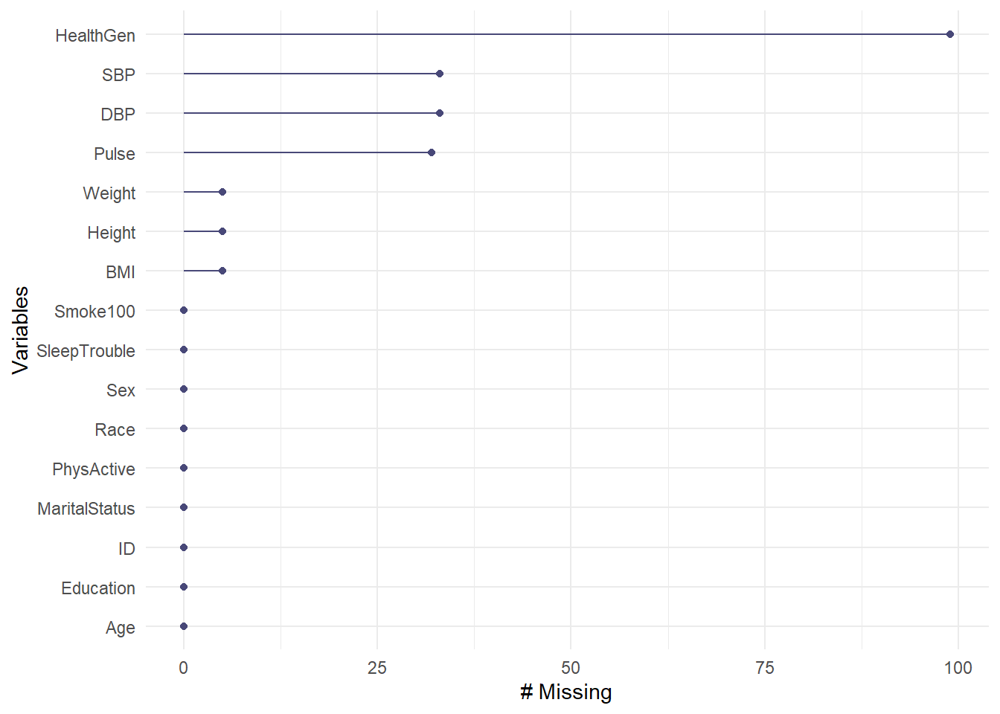

knitr::opts_chunk$set(comment = NA)
library(NHANES)
library(naniar)
library(kableExtra)
library(tidyverse)
theme_set(theme_bw())4 NHANES Data
Next, we’ll explore some data from the US National Health and Nutrition Examination Survey, often referred to as NHANES.
4.1 Setup: Packages Used Here
4.2 The NHANES data: A First Sample
The NHANES package provides a sample of 10,000 NHANES responses from the 2009-10 and 2011-12 administrations, in a tibble also called NHANES. We can obtain the dimensions of this tibble with the dim() function.
NHANES# A tibble: 10,000 × 76
ID SurveyYr Gender Age AgeDecade AgeMonths Race1 Race3 Education
<int> <fct> <fct> <int> <fct> <int> <fct> <fct> <fct>
1 51624 2009_10 male 34 " 30-39" 409 White <NA> High School
2 51624 2009_10 male 34 " 30-39" 409 White <NA> High School
3 51624 2009_10 male 34 " 30-39" 409 White <NA> High School
4 51625 2009_10 male 4 " 0-9" 49 Other <NA> <NA>
5 51630 2009_10 female 49 " 40-49" 596 White <NA> Some College
6 51638 2009_10 male 9 " 0-9" 115 White <NA> <NA>
7 51646 2009_10 male 8 " 0-9" 101 White <NA> <NA>
8 51647 2009_10 female 45 " 40-49" 541 White <NA> College Grad
9 51647 2009_10 female 45 " 40-49" 541 White <NA> College Grad
10 51647 2009_10 female 45 " 40-49" 541 White <NA> College Grad
# ℹ 9,990 more rows
# ℹ 67 more variables: MaritalStatus <fct>, HHIncome <fct>, HHIncomeMid <int>,
# Poverty <dbl>, HomeRooms <int>, HomeOwn <fct>, Work <fct>, Weight <dbl>,
# Length <dbl>, HeadCirc <dbl>, Height <dbl>, BMI <dbl>,
# BMICatUnder20yrs <fct>, BMI_WHO <fct>, Pulse <int>, BPSysAve <int>,
# BPDiaAve <int>, BPSys1 <int>, BPDia1 <int>, BPSys2 <int>, BPDia2 <int>,
# BPSys3 <int>, BPDia3 <int>, Testosterone <dbl>, DirectChol <dbl>, …We see that we have 10000 rows and 76 columns in the NHANES tibble. For more on what makes a particular data frame into a tibble, and why we’d want such a thing, you might be interested in the Tibbles section of Hadley Wickham and Grolemund (2023). Essentially, tibbles are data frames that are easier and more predictable to work with.
4.3 Sampling NHANES Adults
Suppose we want to take this NHANES tibble, and use it to generate a sample describing 750 unique (distinct) adult subjects who completed the 2011-12 version of the survey when they were between the ages of 21 and 64.
4.3.1 Creating a Temporary, Cleaner Tibble
I’ll start by describing the plan we will use to create a new tibble called nh_temp from which we will eventually build our final sample. In particular, let me lay out the steps I will use to create the nh_temp frame from the original NHANES tibble available in the R package called NHANES.
We’ll filter the original NHANES tibble to include only the responses from the 2011-12 administration of the survey. This will cut the sample in half, from 10,000 rows to 5,000.
We’ll then filter again to restrict the sample to adults whose age is at least 21 and also less than 65. I’ll do this because I want to avoid problems with including both children and adults in my sample, and because I also want to focus on the population of people in the US who are usually covered by private insurance from their job, or by Medicaid insurance from the government, rather than those covered by Medicare.
What is listed in the NHANES tibble as
Gendershould be more correctly referred to asSex.Sexis a biological feature of an individual, whileGenderis a social construct. This is an important distinction, so I’ll change the name of the variable.We’ll also rename three other variables, specifically we’ll use
Raceto describe theRace3variable in the original NHANES tibble, as well asSBPto refer to the average systolic blood pressure, which is specified asBPSysAve, andDBPto refer to the average diastolic blood pressure, which is specified asBPDiaAve.Having accomplished the previous four steps, we’ll then select the variables we want to keep in the sample. (We use select for choosing variables or columns in the tibble, and filter for selecting subjects or rows.) The sixteen variables we will select are: ID, Sex, Age, Height, Weight, Race, Education, BMI, SBP, DBP, Pulse, PhysActive, Smoke100, SleepTrouble, MaritalStatus and HealthGen.
The original NHANES tibble includes some subjects (rows) multiple times in an effort to incorporate some of the sampling weights used in most NHANES analyses. For our purposes, though, we’d like to only include each subject one time. We use the
distinct()function to limit the tibble to completely unique subjects (so that, for example, we don’t wind up with two or more rows that have the same ID number.)
Here is the code I used to complete the six steps listed above and create the nh_temp tibble.
nh_temp <- NHANES |>
filter(SurveyYr == "2011_12") |>
filter(Age >= 21 & Age < 65) |>
rename(Sex = Gender, Race = Race3, SBP = BPSysAve, DBP = BPDiaAve) |>
select(ID, Sex, Age, Height, Weight, Race, Education, BMI, SBP, DBP,
Pulse, PhysActive, Smoke100, SleepTrouble,
MaritalStatus, HealthGen) |>
distinct()The resulting nh_temp tibble has 1700 rows and 16 columns.
nh_temp# A tibble: 1,700 × 16
ID Sex Age Height Weight Race Education BMI SBP DBP Pulse
<int> <fct> <int> <dbl> <dbl> <fct> <fct> <dbl> <int> <int> <int>
1 62172 female 43 172 98.6 Black High School 33.3 103 72 80
2 62176 female 34 172. 68.7 White College Gr… 23.3 107 69 92
3 62180 male 35 179. 89 White College Gr… 27.9 107 66 66
4 62199 male 57 186 96.9 White College Gr… 28 110 65 84
5 62205 male 28 171. 84.8 White College Gr… 28.9 122 87 70
6 62206 female 35 167. 81.5 White Some Colle… 29.1 106 50 58
7 62208 male 38 169. 63.2 Hispanic Some Colle… 22.2 105 59 52
8 62209 female 62 143. 53.5 Mexican 8th Grade 26 108 57 72
9 62220 female 31 167. 113. Black College Gr… 40.4 120 71 62
10 62222 male 32 179 80.1 White College Gr… 25 104 73 78
# ℹ 1,690 more rows
# ℹ 5 more variables: PhysActive <fct>, Smoke100 <fct>, SleepTrouble <fct>,
# MaritalStatus <fct>, HealthGen <fct>
4.3.2 Sampling nh_temp to obtain our nh_adult750 sample
Having established the nh_temp tibble, we now select a random sample of 750 adults from the 1700 available responses.
- We will use the
set.seed()function in R to set a random numerical seed to ensure that if you redo this work, you will obtain the same sample.- Setting a seed is an important part of being able to replicate the work later when sampling is involved. If you and I use the same seed, we should get the same sample.
- Then we will use the
slice_sample()function to actually draw the random sample, without replacement.- “Without replacement” means that once we’ve selected a particular subject, we won’t select them again.
set.seed(431002)
# use set.seed to ensure that we all get the same random sample
nh_adult750 <- slice_sample(nh_temp, n = 750, replace = F)
nh_adult750# A tibble: 750 × 16
ID Sex Age Height Weight Race Education BMI SBP DBP Pulse
<int> <fct> <int> <dbl> <dbl> <fct> <fct> <dbl> <int> <int> <int>
1 68648 female 30 181. 67.1 White College Gr… 20.4 103 59 78
2 67200 male 30 180. 86.6 White College Gr… 26.7 113 68 70
3 66404 female 35 160. 71.1 White College Gr… 27.8 116 80 68
4 70535 male 40 177. 82 White College Gr… 26.3 130 79 68
5 65308 female 54 151. 60.6 Mexican 8th Grade 26.6 130 64 48
6 67392 male 41 171. 90.7 Hispanic College Gr… 31.2 124 82 68
7 63218 male 35 163. 81 Mexican 8th Grade 30.3 128 96 82
8 65879 female 32 160. 66.4 Mexican College Gr… 25.9 104 70 78
9 63617 male 29 189. 83.3 White College Gr… 23.2 105 72 76
10 64720 male 29 174. 62.3 Black College Gr… 20.6 127 60 84
# ℹ 740 more rows
# ℹ 5 more variables: PhysActive <fct>, Smoke100 <fct>, SleepTrouble <fct>,
# MaritalStatus <fct>, HealthGen <fct>The nh_adult750 tibble now includes 750 rows (observations) on 16 variables (columns). Essentially, we have 16 pieces of information on each of 750 adult NHANES subjects who were included in the 2011-12 panel.
4.3.3 Summarizing the Data’s Structure
We can identify the number of rows and columns in a data frame or tibble with the dim function.
dim(nh_adult750)[1] 750 16The str function provides a lot of information about the structure of a data frame or tibble.
str(nh_adult750)tibble [750 × 16] (S3: tbl_df/tbl/data.frame)
$ ID : int [1:750] 68648 67200 66404 70535 65308 67392 63218 65879 63617 64720 ...
$ Sex : Factor w/ 2 levels "female","male": 1 2 1 2 1 2 2 1 2 2 ...
$ Age : int [1:750] 30 30 35 40 54 41 35 32 29 29 ...
$ Height : num [1:750] 181 180 160 177 151 ...
$ Weight : num [1:750] 67.1 86.6 71.1 82 60.6 90.7 81 66.4 83.3 62.3 ...
$ Race : Factor w/ 6 levels "Asian","Black",..: 5 5 5 5 4 3 4 4 5 2 ...
$ Education : Factor w/ 5 levels "8th Grade","9 - 11th Grade",..: 5 5 5 5 1 5 1 5 5 5 ...
$ BMI : num [1:750] 20.4 26.7 27.8 26.3 26.6 31.2 30.3 25.9 23.2 20.6 ...
$ SBP : int [1:750] 103 113 116 130 130 124 128 104 105 127 ...
$ DBP : int [1:750] 59 68 80 79 64 82 96 70 72 60 ...
$ Pulse : int [1:750] 78 70 68 68 48 68 82 78 76 84 ...
$ PhysActive : Factor w/ 2 levels "No","Yes": 1 2 2 1 1 2 1 2 2 2 ...
$ Smoke100 : Factor w/ 2 levels "No","Yes": 1 2 1 2 2 1 2 1 2 2 ...
$ SleepTrouble : Factor w/ 2 levels "No","Yes": 2 1 1 1 1 1 1 1 2 1 ...
$ MaritalStatus: Factor w/ 6 levels "Divorced","LivePartner",..: 3 4 3 3 2 3 3 3 3 2 ...
$ HealthGen : Factor w/ 5 levels "Excellent","Vgood",..: 1 1 1 2 4 3 NA 1 2 4 ...To see the first few observations, use head, and to see the last few, try tail…
tail(nh_adult750, 5) # shows the last five observations in the data set# A tibble: 5 × 16
ID Sex Age Height Weight Race Education BMI SBP DBP Pulse
<int> <fct> <int> <dbl> <dbl> <fct> <fct> <dbl> <int> <int> <int>
1 63924 female 29 165. 113. Black High School 41.9 98 56 74
2 69825 female 43 164. 63.3 White College Grad 23.7 122 83 88
3 68109 male 45 170. 78.7 Black High School 27.1 140 79 102
4 64598 female 60 158 74.5 White Some College 29.8 137 80 78
5 64048 female 54 161. 67.5 White Some College 26.2 121 87 72
# ℹ 5 more variables: PhysActive <fct>, Smoke100 <fct>, SleepTrouble <fct>,
# MaritalStatus <fct>, HealthGen <fct>4.3.4 What are the variables?
We can use the glimpse function to get a short preview of the data.
glimpse(nh_adult750)Rows: 750
Columns: 16
$ ID <int> 68648, 67200, 66404, 70535, 65308, 67392, 63218, 65879, …
$ Sex <fct> female, male, female, male, female, male, male, female, …
$ Age <int> 30, 30, 35, 40, 54, 41, 35, 32, 29, 29, 64, 28, 31, 59, …
$ Height <dbl> 181.3, 180.2, 159.8, 176.6, 150.9, 170.6, 163.4, 160.2, …
$ Weight <dbl> 67.1, 86.6, 71.1, 82.0, 60.6, 90.7, 81.0, 66.4, 83.3, 62…
$ Race <fct> White, White, White, White, Mexican, Hispanic, Mexican, …
$ Education <fct> College Grad, College Grad, College Grad, College Grad, …
$ BMI <dbl> 20.4, 26.7, 27.8, 26.3, 26.6, 31.2, 30.3, 25.9, 23.2, 20…
$ SBP <int> 103, 113, 116, 130, 130, 124, 128, 104, 105, 127, 128, 1…
$ DBP <int> 59, 68, 80, 79, 64, 82, 96, 70, 72, 60, 74, 76, 82, 66, …
$ Pulse <int> 78, 70, 68, 68, 48, 68, 82, 78, 76, 84, 62, 56, 78, 66, …
$ PhysActive <fct> No, Yes, Yes, No, No, Yes, No, Yes, Yes, Yes, Yes, No, N…
$ Smoke100 <fct> No, Yes, No, Yes, Yes, No, Yes, No, Yes, Yes, No, No, Ye…
$ SleepTrouble <fct> Yes, No, No, No, No, No, No, No, Yes, No, No, Yes, No, Y…
$ MaritalStatus <fct> Married, NeverMarried, Married, Married, LivePartner, Ma…
$ HealthGen <fct> Excellent, Excellent, Excellent, Vgood, Fair, Good, NA, …The variables we have collected are described in the brief table below1.
| Variable | Description | Sample Values |
|---|---|---|
| ID | a numerical code identifying the subject | 68648, 67200 |
| Sex | sex of subject (2 levels) | female, male |
| Age | age (years) at screening of subject | 30, 35 |
| Height | height (in cm) at screening of subject | 181.3, 180.2 |
| Weight | weight (in kg) at screening of subject | 67.1, 86.6 |
| Race | reported race of subject (6 levels) | White, Black |
| Education | educational level of subject (5 levels) | College Grad, High School |
| BMI | body-mass index, in kg/m2 | 20.4, 26.7 |
| SBP | systolic blood pressure in mm Hg | 103, 113 |
| DBP | diastolic blood pressure in mm Hg | 59, 68 |
| Pulse | 60 second pulse rate in beats per minute | 78, 70 |
| PhysActive | Moderate or vigorous-intensity sports? | Yes, No |
| Smoke100 | Smoked at least 100 cigarettes lifetime? | Yes, No |
| SleepTrouble | Told a doctor they have trouble sleeping? | Yes, No |
| MaritalStatus | Marital Status | Married, Divorced |
| HealthGen | Self-report general health rating (5 levels) | Vgood, Fair |
The levels for the multi-categorical variables are:
- Race: Mexican, Hispanic, White, Black, Asian, or Other.
- Education: 8th Grade, 9 - 11th Grade, High School, Some College, or College Grad.
- MaritalStatus: Married, Widowed, Divorced, Separated, NeverMarried or LivePartner (living with partner).
- HealthGen: Excellent, Vgood, Good, Fair or Poor.
Some details can be obtained using the summary function, or any of the other approaches we saw used with the penguins data earlier.
summary(nh_adult750) ID Sex Age Height Weight
Min. :62206 female:388 Min. :21.00 Min. :142.4 Min. : 39.30
1st Qu.:64277 male :362 1st Qu.:30.00 1st Qu.:161.8 1st Qu.: 67.40
Median :66925 Median :40.00 Median :168.9 Median : 80.00
Mean :66936 Mean :40.82 Mean :168.9 Mean : 83.16
3rd Qu.:69414 3rd Qu.:51.00 3rd Qu.:175.7 3rd Qu.: 95.30
Max. :71911 Max. :64.00 Max. :200.4 Max. :198.70
NA's :5 NA's :5
Race Education BMI SBP
Asian : 70 8th Grade : 50 Min. :16.70 Min. : 83.0
Black :128 9 - 11th Grade: 76 1st Qu.:24.20 1st Qu.:108.0
Hispanic: 63 High School :143 Median :27.90 Median :118.0
Mexican : 80 Some College :241 Mean :29.08 Mean :118.8
White :393 College Grad :240 3rd Qu.:32.10 3rd Qu.:127.0
Other : 16 Max. :80.60 Max. :209.0
NA's :5 NA's :33
DBP Pulse PhysActive Smoke100 SleepTrouble
Min. : 0.00 Min. : 40.00 No :326 No :453 No :555
1st Qu.: 66.00 1st Qu.: 66.00 Yes:424 Yes:297 Yes:195
Median : 73.00 Median : 72.00
Mean : 72.69 Mean : 73.53
3rd Qu.: 80.00 3rd Qu.: 80.00
Max. :108.00 Max. :124.00
NA's :33 NA's :32
MaritalStatus HealthGen
Divorced : 78 Excellent: 84
LivePartner : 70 Vgood :197
Married :388 Good :252
NeverMarried:179 Fair :104
Separated : 19 Poor : 14
Widowed : 16 NA's : 99
Note the appearance of NA's (indicating missing values) in some columns, and that some variables are summarized by a list of their (categorical) values (with counts) and some (quantitative/numeric) variables are summarized with a minimum, quartiles and means.
4.4 Counting Missing Values
The summary() command counts the number of missing observations in each variable, but sometimes you want considerably more information.
We can use some functions from the naniar package to learn useful things about the missing data in our nh_adult750 sample. (Recall that we could also use the vis_miss() function from the visdat package, as we saw earlier with the penguins to get some of this information, but the naniar approach provides more exploratory tools.)
The miss_var_table command provides a table of the number of variables with 0, 1, 2, up to n, missing values and the percentage of the total number of variables those variables make up.
miss_var_table(nh_adult750)# A tibble: 5 × 3
n_miss_in_var n_vars pct_vars
<int> <int> <dbl>
1 0 9 56.2
2 5 3 18.8
3 32 1 6.25
4 33 2 12.5
5 99 1 6.25So, for instance, we have 9 variables with no missing data, and that constitutes 56.25% of the 16 variables in our nh_adult750 data.
The miss_var_summary() function tabulates the number, percent missing, and cumulative sum of missing of each variable in our tibble, in order of most to least missing values.
miss_var_summary(nh_adult750) |>
kbl() |>
kable_styling(full_width = FALSE, position = "center")| variable | n_miss | pct_miss |
|---|---|---|
| HealthGen | 99 | 13.2 |
| SBP | 33 | 4.4 |
| DBP | 33 | 4.4 |
| Pulse | 32 | 4.27 |
| Height | 5 | 0.667 |
| Weight | 5 | 0.667 |
| BMI | 5 | 0.667 |
| ID | 0 | 0 |
| Sex | 0 | 0 |
| Age | 0 | 0 |
| Race | 0 | 0 |
| Education | 0 | 0 |
| PhysActive | 0 | 0 |
| Smoke100 | 0 | 0 |
| SleepTrouble | 0 | 0 |
| MaritalStatus | 0 | 0 |
So, for example, the HealthGen variable is the one missing more of our data than anything else within the nh_adult750 tibble.
A graph of this information is available, as well.
gg_miss_var(nh_adult750)
I’ll note that there are also functions to count the number of missing observations by case (observation) rather than variable. For example, we can use miss_case_table.
miss_case_table(nh_adult750)# A tibble: 6 × 3
n_miss_in_case n_cases pct_cases
<int> <int> <dbl>
1 0 636 84.8
2 1 78 10.4
3 3 15 2
4 4 19 2.53
5 6 1 0.133
6 7 1 0.133Now we see that 636 observations, or 84.8% of all cases have no missing data.
We can use miss_case_summary() to identify cases with missing data, as well.
miss_case_summary(nh_adult750)# A tibble: 750 × 3
case n_miss pct_miss
<int> <int> <dbl>
1 342 7 43.8
2 606 6 37.5
3 157 4 25
4 169 4 25
5 204 4 25
6 234 4 25
7 323 4 25
8 415 4 25
9 478 4 25
10 483 4 25
# ℹ 740 more rows4.5 Sampling 500 Complete Cases
If we wanted a sample of exactly 750 subjects with complete data, we would have needed to add a step in the development of our nh_temp tibble to filter for complete cases.
nh_temp2 <- NHANES |>
filter(SurveyYr == "2011_12") |>
filter(Age >= 21 & Age < 65) |>
rename(Sex = Gender, Race = Race3, SBP = BPSysAve, DBP = BPDiaAve) |>
select(ID, Sex, Age, Height, Weight, Race, Education, BMI, SBP, DBP,
Pulse, PhysActive, Smoke100, SleepTrouble,
MaritalStatus, HealthGen) |>
distinct() |>
na.omit()Let’s check that this new tibble has no missing data.
miss_var_table(nh_temp2)# A tibble: 1 × 3
n_miss_in_var n_vars pct_vars
<int> <int> <dbl>
1 0 16 100OK. Now, let’s create a second sample, called nh_adult500cc, where now, we will select 500 adults with complete data on all of the variables of interest, and using a different random seed. The cc here stands for complete cases.
set.seed(431003)
# use set.seed to ensure that we all get the same random sample
nh_adult500cc <- slice_sample(nh_temp2, n = 500, replace = F)
nh_adult500cc# A tibble: 500 × 16
ID Sex Age Height Weight Race Education BMI SBP DBP Pulse
<int> <fct> <int> <dbl> <dbl> <fct> <fct> <dbl> <int> <int> <int>
1 64079 female 25 159. 86.2 Hispanic Some Colle… 34.2 120 67 84
2 64374 female 52 169 65.5 Asian College Gr… 22.9 92 58 60
3 71875 male 42 182. 94.1 Black College Gr… 28.5 102 63 76
4 66396 female 46 161. 107. Asian 8th Grade 41.2 111 61 70
5 64315 female 52 161. 64.5 White 9 - 11th G… 24.9 130 69 68
6 64015 male 32 168. 82.3 Mexican Some Colle… 29 119 79 70
7 63590 male 21 181. 98.3 Black Some Colle… 29.9 121 67 58
8 70893 female 30 171. 65.7 White 9 - 11th G… 22.5 104 75 74
9 70828 male 26 178. 100. White Some Colle… 31.5 119 77 66
10 67930 male 59 172. 91.7 Mexican College Gr… 31 127 85 66
# ℹ 490 more rows
# ℹ 5 more variables: PhysActive <fct>, Smoke100 <fct>, SleepTrouble <fct>,
# MaritalStatus <fct>, HealthGen <fct>
4.6 Saving our Samples in .Rds files
We’ll save the nh_adult750 and nh_adult500cc samples to use in later parts of the notes. To do this, we’ll save them as .Rds files, which are files we can read directly into R with the read_rds command, and which will have some advantages for us later on.
You will also find these .Rds files as part of the 431-data repository for the course.
4.7 Coming Up
Next, we’ll introduce some new ways of thinking about data and variables as we load, explore and learn about some of the variables in our two NHANES samples.
Descriptions are adapted from the ?NHANES help file. Remember that what NHANES lists as Gender is captured here as Sex, and similarly Race3, BPSysAve and BPDiaAve from NHANES are here listed as Race, SBP and DBP.↩︎